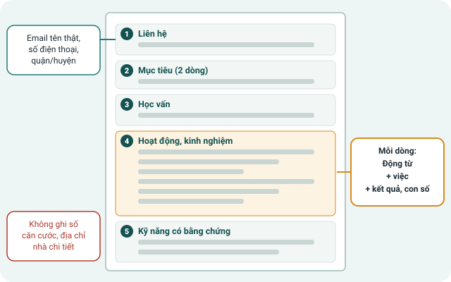

K2 · Trình bày và viết rõ ràng › Bậc 2 Bắt đầu
Viết CV một trang khi chưa có kinh nghiệm đi làm
Bài này làm Tờ 3: CV một trang. Khung CV để in.
1. Mục tiêu
- Viết CV một trang gồm 5 phần, khớp với một tin tuyển dụng cụ thể.
- Viết mỗi dòng hoạt động theo công thức động từ + việc + kết quả.
2. Khởi động truy xuất
- Khi đọc tin tuyển dụng, bạn chia yêu cầu thành hai loại nào?
- Nêu 3 dấu hiệu cần dừng lại.
Đáp án
- Bắt buộc và ưu tiên.
- Lương rất cao mà việc mập mờ; đòi nộp tiền; đòi giữ giấy tờ gốc.
Xem lại: Đọc tin tuyển dụng.
3. Giải thích
CV (curriculum vitae, bản tóm tắt học tập và kinh nghiệm) giúp người tuyển quyết định có gọi bạn phỏng vấn không. Họ thường đọc rất nhanh. Vì vậy CV đầu tiên chỉ nên một trang.

Năm phần của CV:
- Liên hệ. Họ tên, số điện thoại, email dùng tên thật, quận hoặc huyện. Không ghi số căn cước.
- Mục tiêu. Hai dòng: muốn làm việc gì, đóng góp được gì cho nơi đó.
- Học vấn. Trường, ngành, năm. Ghi điểm nếu tốt.
- Hoạt động, kinh nghiệm. Chưa đi làm vẫn có nhiều thứ để ghi: dự án nhóm, câu lạc bộ, tình nguyện, phụ giúp việc nhà, bán hàng online.
- Kỹ năng có bằng chứng. "Excel: làm bảng chi tiêu cho lớp 40 bạn" tốt hơn "Thành thạo Excel".
Công thức một dòng: động từ + việc + kết quả, có số nếu được.
Viết lại một dòng CV
- Tham gia câu lạc bộ tình nguyện.
- Có kỹ năng giao tiếp tốt.
- Phụ bán hàng cho gia đình.
- Tổ chức 2 buổi quyên góp sách, thu được 300 cuốn.
- Tư vấn khách tại gian hàng hội chợ trường, bán hết 80 phần.
- Ghi sổ thu chi hằng ngày cho tiệm tạp hóa của gia đình suốt 6 tháng.
Khớp với tin tuyển dụng. Lấy Phiếu đọc tin ở bài trước. Mỗi yêu cầu bắt buộc nên có ít nhất một dòng CV làm bằng chứng. Đưa dòng đó lên đầu phần 4.
Một quy tắc kiểm tra: mỗi dòng trong CV, bạn phải kể được thành một ví dụ STAR khi bị hỏi. Không kể được thì bỏ dòng đó.
Ảnh chân dung: chỉ thêm khi tin tuyển dụng yêu cầu. Lưu file dạng PDF, đặt tên rõ: "CV_HoTen_ViTri.pdf".
4. Ví dụ tại nơi làm việc Việt Nam
Tình huống giả định. Mai nộp vào vị trí thu ngân bán thời gian ở bài trước. Yêu cầu bắt buộc: đủ 18 tuổi, cẩn thận, làm được cuối tuần.
Phần 4 trong CV của Mai:
Hoạt động
- Quản lý quỹ lớp 45 bạn trong năm học 2025–2026, công khai thu chi hằng tháng, không sai lệch.
- Bán hàng tại gian hàng Hội chợ Xuân của khoa, thu tiền và trả lại tiền thừa cho khoảng 150 khách.
- Phụ bán hàng tạp hóa của gia đình vào cuối tuần trong 2 năm.
Mục tiêu: "Tìm việc thu ngân bán thời gian vào buổi tối và cuối tuần. Mong góp sự cẩn thận khi làm việc với tiền và với khách."
Vì sao cách này tốt: yêu cầu "cẩn thận" có hai dòng bằng chứng về tiền bạc. "Làm được cuối tuần" có bằng chứng từ việc gia đình. Mỗi dòng đều kể được thành một ví dụ.
5. Thực hành
Tình huống giả định. Tuấn ở Bài 1 nộp vào vị trí "Nhân viên hỗ trợ kỹ thuật làm thêm ca tối" ở một cửa hàng máy tính. Yêu cầu bắt buộc: biết cài Windows và phần mềm văn phòng; giao tiếp lịch sự với khách. Tuấn từng cài lại máy cho 6 người; làm bảng điểm danh bằng Google Sheets cho đội bóng khoa; trực quầy thông tin ngày nhập học của khoa.
Viết phần 4 (3 dòng) và phần 2 (mục tiêu) cho CV của Tuấn.
Gợi ý 1
Bắt đầu mỗi dòng bằng động từ: cài đặt, hướng dẫn, thiết kế, trực, giải đáp.
Gợi ý 2
Yêu cầu "giao tiếp lịch sự với khách" cần một dòng bằng chứng. Việc trực quầy thông tin là ứng viên tốt.
Lời giải mẫu
- Cài lại Windows và bộ phần mềm văn phòng cho 6 máy tính của người quen, hướng dẫn họ dùng sau khi cài.
- Giải đáp thắc mắc cho khoảng 100 tân sinh viên tại quầy thông tin ngày nhập học của khoa.
- Thiết kế bảng điểm danh bằng Google Sheets cho đội bóng khoa 25 người, dùng suốt học kỳ.
Mục tiêu: "Tìm việc hỗ trợ kỹ thuật làm thêm ca tối. Mong góp kỹ năng cài đặt máy và hướng dẫn khách dễ hiểu."
(Chi tiết là giả định để minh họa.)
6. Tự kiểm tra
Chọn đáp án. Mỗi lựa chọn đều có giải thích.
Câu 1. Dòng CV nào viết đúng công thức động từ + việc + kết quả?
-
Chưa đúng. Không có động từ cụ thể, không có kết quả.
-
Đúng. Đúng. Có động từ, việc cụ thể và kết quả bằng số.
-
Chưa đúng. Đây là tính từ tự nhận, người tuyển không kiểm chứng được.
Câu 2. Phần Liên hệ trong CV nên có gì?
-
Đúng. Đúng. Đủ để liên hệ, không lộ thông tin không cần thiết.
-
Chưa đúng. Số căn cước và địa chỉ chi tiết chưa cần ở bước nộp CV.
-
Chưa đúng. Thiếu số điện thoại, và email nên dùng tên thật.
Câu 3. Tin tuyển dụng có yêu cầu bắt buộc "đúng giờ". Bạn nên làm gì trong CV?
-
Chưa đúng. Lời tự nhận chưa phải bằng chứng.
-
Chưa đúng. Vẫn có thể có bằng chứng, và đây là yêu cầu bắt buộc.
-
Đúng. Đúng. Mỗi yêu cầu bắt buộc nên có một dòng bằng chứng.
Câu 4. Bạn có dòng CV "Quản lý fanpage câu lạc bộ" nhưng không kể được đã làm gì. Bạn nên làm gì?
-
Chưa đúng. Khi bị hỏi mà không kể được, người tuyển sẽ mất tin vào cả CV.
-
Đúng. Đúng. Mỗi dòng CV phải kể được thành một ví dụ STAR.
-
Chưa đúng. Thêm tính từ không thay được bằng chứng.
7. Phản tư
- Dòng nào trong CV của bạn khó kể thành một ví dụ nhất? Vì sao?
- Bạn có trải nghiệm nào chưa từng nghĩ là "kinh nghiệm", nhưng nay thấy ghi được vào CV?
8. Áp dụng thật
Trong 7 ngày tới, viết CV một trang cho 1 tin bạn đã chọn ở Tờ 2. Nhờ một người đọc trong 30 giây, rồi hỏi: "Bạn nhớ được điều gì về mình?" Sửa đến khi họ nhớ được điều bạn muốn.
Cách kể một dòng CV thành ví dụ đầy đủ có ở bài Kể ví dụ STAR khi phỏng vấn.
9. Siêu dữ liệu
| skill | K2 · Trình bày và viết rõ ràng |
|---|---|
| level | Bậc 2 · Bắt đầu |
| group | N2 |
| framework_map | CSfW: 2a Communicate for work; SkillsFuture CCS: Communication; NACE: Communication; Career and Self-Development (chỉ dẫn chiếu) |
| updated | 2026-11-14 |
Hoàn thành bài
Đánh dấu đã học để site gợi ý lịch ôn sau 1, 3 và 7 ngày. Dữ liệu chỉ lưu trên máy của bạn.
Lịch ôn gợi ý: